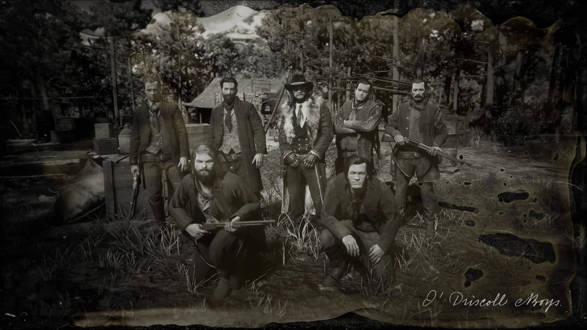

Wiki ANNO 1901
Van der Linde gang
A gangue Van der Linde é um grupo de foras da lei liderado por Dutch van der Linde no final do século XIX. Eles realizam assaltos, roubos e fugas constantes enquanto tentam escapar da lei. Inicialmente movidos por ideais de liberdade, acabam se destruindo por traições e conflitos internos.x
Del Lobo
Os Del Lobo são famosos pelo o seu grupo de latinos, sendo notórios dentro e ao redor do estado americano de New Austin. O seu reinado de terror estende-se de Tumbleweed até Thieves' Landing, com seus crimes consistindo principalmente em múltiplos assassinatos, roubos e extorsões por todo o estado.
O'Driscolls
Os O'Driscolls, liderados por Colm O'Driscoll, são uma gangue cruel e violenta, conhecida por roubos, emboscadas e assassinatos. Rivais da gangue Van der Linde, agem sem ideais, movidos apenas por ganância e brutalidade.
